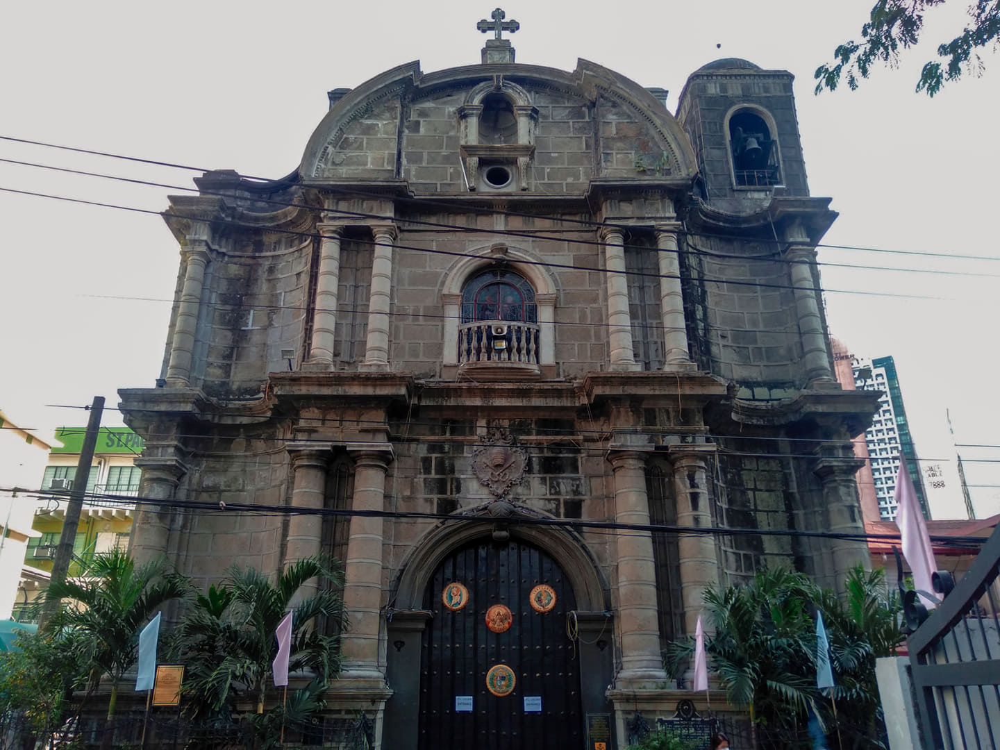

Oldest stone church in the Philippines. Plans were approved in 1586. Construction started in 1587 and completed in 1607 under the supervision successively of Augustinian Fathers Francisco de Bustos, Ildefonso Pérez, Diego de Ávila and Brother Alfonso de Perea.

The San Pedro Macati Church, also known as Saints Peter and Paul Parish Church, is a Roman Catholic Church located in the Makati Poblacion, the cultural and heritage district of Makati, Philippines